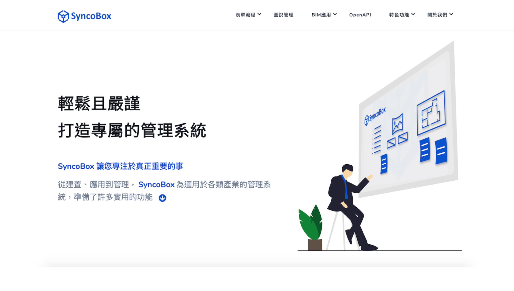
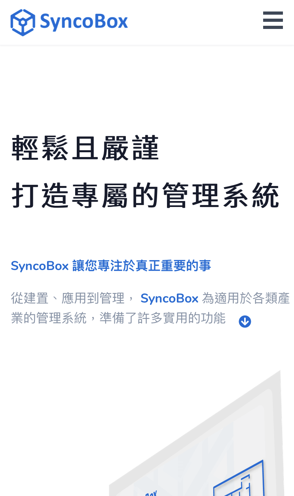
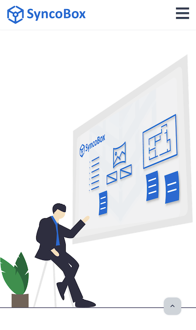
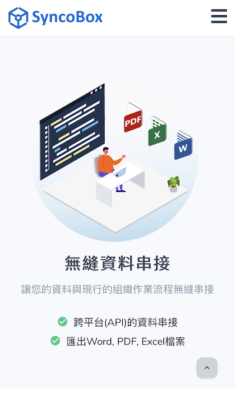
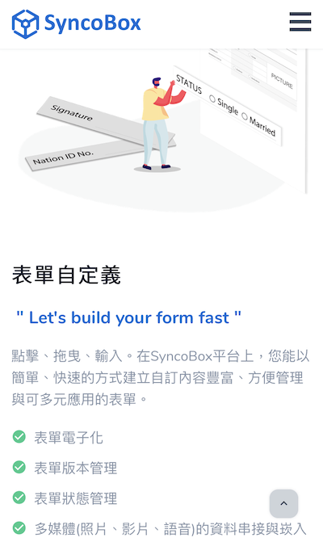
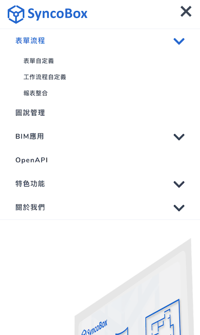

Description
2020年
SyncoBox是衛武資訊正在開發的產品，旨在為企業提供自由化的管理平台建置，包含自定義的應用程式製作、電子表單製作與簽核、報表整合、文件管理、 3D模型瀏覽與溝通、自動化流程等功能。雖產品尚未正式上市，仍需要先將整體產品架構與概念製成網頁，意在吸引潛在客戶。
負責項目
文案撰寫
圖片素材設計與製作
RWD設計與實作
網頁建置與維護
設計與成果
活潑與具詮釋性的圖片素材

部分文案內容

行動裝置畫面





後記
挑戰
精準的文案內容
從Slogan、大標題、小標題，到不容許囉唆的各區塊內文，都需要精準地表達每個功能模組的設計目的與特色。既使沒有實際介面展示，也要讓觀者清楚了解產品可以提供的服務。
「SyncoBox—讓您專注於真正重要的事」，這句Slogan 是我反覆琢磨這個產品的核心設計目標之後，所誕生出我認為最能精準詮釋產品靈魂的一句話。
精準的素材設計
由於是概念性描述的產品網站，缺少了實際的介面與操作畫面展示，我與UI 設計師必須設計出可以完整描述各個功能模組的圖片素材。
每個圖片素材內透過意象、人物的動作與角度、色彩、透明度、圖示、視線的平衡與流動...，亦是反覆雕琢，過程中必須和負責各個功能模組的負責人不斷溝通，以達到「一張圖的精準呈現」的目的。
由於是概念性描述的產品網站，缺少了實際的介面與操作畫面展示，我與UI 設計師必須設計出可以完整描述各個功能模組的圖片素材。
成長
Google Analytics
以敏捷式開發產品，需隨時準備好以紮實的基礎進行軸轉(Pivot)。因此，為了掌握「哪一個功能」最能引起大家的興趣，我們特別在每一個功能模組的內文下方放置了「了解更多」的按鈕， 並以GA 進行事件監聽，收集每一個「了解更多」的按鈕的點擊率。這也讓我開始有了GA的相關經驗。
訪談
為了製作圖片素材與撰寫文案，我必須在短時間內通盤的了解所有模組的功能和精神，透過以目標導向的訪談模式，引導每個模組負責人闡述他們對於該模組的核心價值、使用情境、以及可以解決的問題等。有效率的訪談，對文案與素材的製作提供了很大的助益。